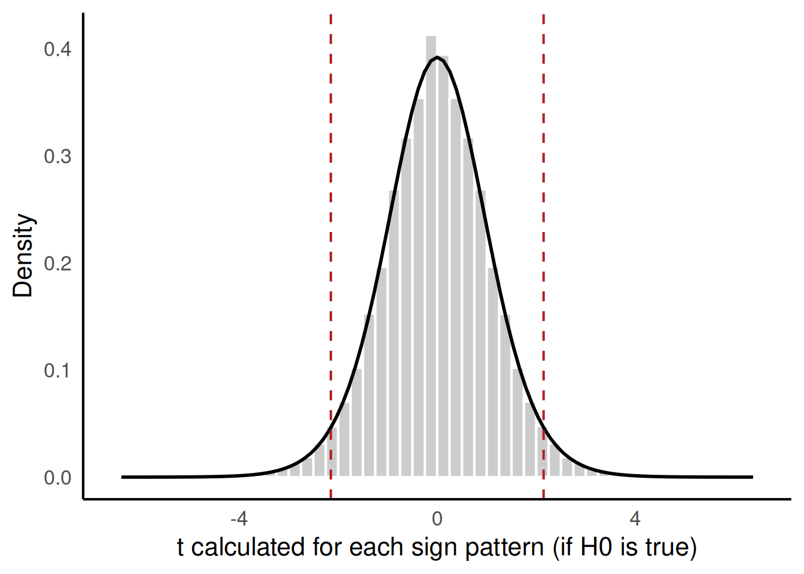
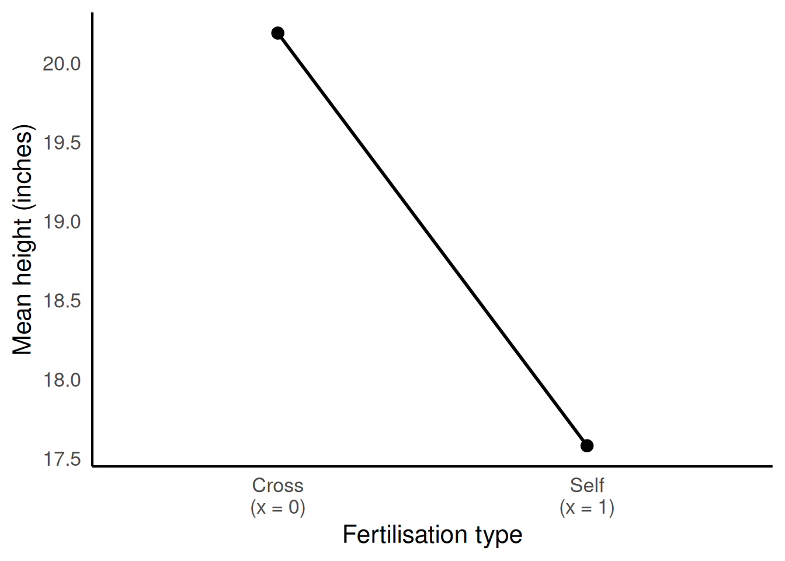

The t-distribution as a shortcut
This page summarises what we covered in the first hour of Session 4. Use it for revision; the full activities were worked through in class.
Progression: estimate ÷ SE = t → read the p-value from the t-distribution, allowing for sample size → the coefficients of a linear model as a line.
Strength of evidence as a ratio
We compared six scenarios, each a difference between two group means with its standard error:
| Scenario | A | B | C | D | E | F |
|---|---|---|---|---|---|---|
| Difference | 2.0 | 2.0 | 2.0 | 0.5 | 2.0 | 5.0 |
| SE | 0.5 | 1.0 | 2.0 | 1.0 | 1.0 | 1.0 |
The same difference is more convincing when it is measured more precisely (A, B, C), and a larger difference is more convincing at the same precision (D, E, F). Scenarios B and E look equally convincing.
NoteThe rule
The strength of evidence depends on the size of the estimate compared with its standard error. This ratio is the t-statistic: t = estimate / standard error. A large t, positive or negative, means the estimate is many standard errors away from zero. Because the units cancel, t means the same thing whatever the units of the data.
The study in the Session 3 exit question (coefficient 1.2, SE 0.5) has t = 2.4. Darwin’s mean paired difference (2.62 inches, SE 1.22) has t ≈ 2.15.
Check your understanding. In Scenario C, the t-statistic is .
t = 2.0 / 2.0 = 1.0. Compare this with Scenario A, where t = 4.0. The ratio, not the estimate alone, determines the evidence.
The shortcut curve
In Session 3 we built a null distribution by flipping the signs of Darwin’s differences, and each run of shuffles gave a slightly different p-value. A computer can instead list every possible sign pattern: with 15 pairs there are 32 768, but with 30 pairs there would be over a billion. Figure 1 shows t for all 32 768 patterns, with the t-distribution for 14 degrees of freedom drawn over it. The curve comes from a formula: nobody had to shuffle anything to draw it.
| Method | What you need | Two-sided p-value |
|---|---|---|
| List all 32 768 sign patterns | All 15 differences and a lot of computing | 0.053 |
| Read the area from the t-distribution | Just t = 2.15 and 14 degrees of freedom | 0.0497 |
The curve follows the bars closely, so the two p-values are almost the same. In Session 3, t.test() gave p = 0.025: that was one-sided, counting one tail only. Counting both tails doubles it, to about 0.050.
NoteThe rule
If the null hypothesis is true and the data are roughly normal, the null distribution of t follows a known curve: the t-distribution. So instead of building the null distribution, you calculate t and read the p-value from the curve. This is the shortcut that t.test() and lm() use. With small samples that are skewed or contain extreme values, the curve can be a poor match, so plot your data before relying on the shortcut.
Same t, different sample size
The shape of the t-distribution depends on the degrees of freedom (df); for paired differences, df is the number of pairs minus one. The 95% multiplier is the value t must exceed for a two-sided p-value below 0.05:
| df | 3 | 4 | 14 | 30 | 100 | Very large |
|---|---|---|---|---|---|---|
| 95% multiplier | 3.18 | 2.78 | 2.14 | 2.04 | 1.98 | 1.96 |
Three studies all found a mean paired difference of 2.62 with an SE of 1.22, so all three had t = 2.15. They differed only in the number of pairs:
| Study | Pairs | df | 95% multiplier | t = 2.15 bigger? | p-value |
|---|---|---|---|---|---|
| X | 5 | 4 | 2.78 | No | 0.098 |
| Y | 15 | 14 | 2.14 | Only just | 0.050 |
| Z | 101 | 100 | 1.98 | Yes | 0.034 |
NoteThe rule
The t-distribution allows for sample size. With few observations, the SE is itself estimated unreliably, so the t-distribution has heavier tails and t must clear a higher bar. The degrees of freedom set that bar. The same t can give p below 0.05 in a large study and not in a small one. As the sample grows, the multiplier approaches 1.96, the value used for confidence intervals in Session 2.
Check your understanding. A study of 4 pairs finds t = 2.5. Is its two-sided p-value below 0.05?
With 4 pairs, df = 3 and the 95% multiplier is 3.18. A t of 2.5 does not clear it, so p is above 0.05. With 31 pairs (df = 30, multiplier 2.04), the same t would give p below 0.05.
From two means to a line
To draw a comparison of two group means as a line, each group is given a number: Cross is x = 0 and Self is x = 1. Darwin’s mean heights were 20.19 inches (Cross) and 17.58 inches (Self).

The line has an intercept of 20.19 (its height at x = 0) and a slope of −2.62 (the change from x = 0 to x = 1). These are exactly the two estimates lm(height ~ type) reports in hour 2: (Intercept) = 20.19 and typeSelf = −2.62.
NoteThe rule
Giving the groups the numbers 0 and 1 turns a comparison of two means into a straight line. The intercept is the mean of the group coded 0, the reference level. The slope is the difference between the two means. These are the two coefficients a linear model reports. The x-axis is a label, not a measurement: the line does not mean that height changes gradually between the groups.
We then returned to the Session 3 exit question by adding an invented third treatment with a mean height of 19.00 inches. The model compares every treatment with the reference level, so it needs two differences: Self − Cross = −2.62 and Third − Cross = −1.19.
NoteThe rule
Each treatment is measured as its own step from the reference level. A model with three groups therefore reports an intercept and two coefficients, one for each treatment that is not the reference. A single difference of means is no longer enough. Models like this are fitted in Session 6.
Check your understanding. A model compares four groups. How many coefficients does it report in addition to the intercept?
Exit ticket
The question posed at the end of the session:
Two studies both find t = 2.5. One has 4 pairs and the other has 31 pairs. Using the table of multipliers, which study has a two-sided p-value below 0.05? Explain why.